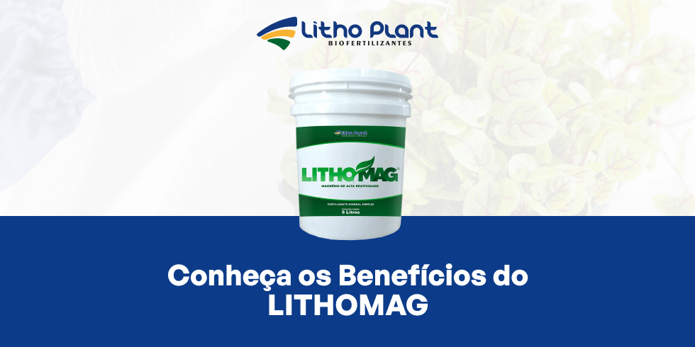
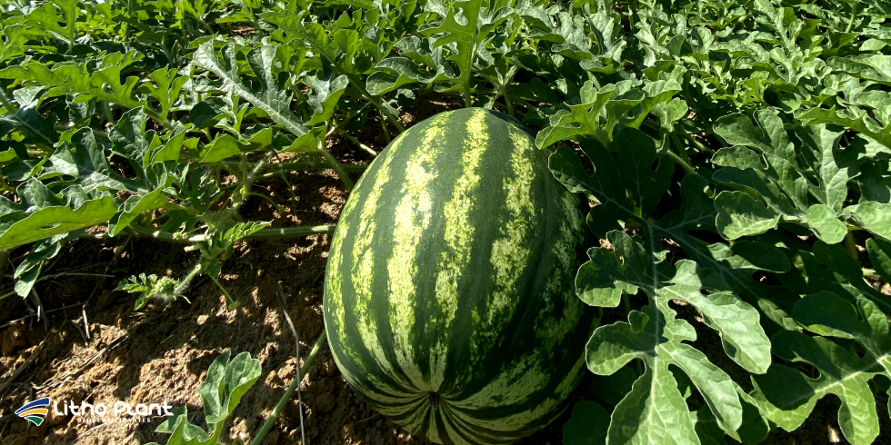

Conheça os Benefícios do LITHOMAG

Litho Mag entrega magnésio de alta pureza diretamente nas folhas em momentos críticos do ciclo.Litho Plant, uma indústria de biofertilizantes em Linhares, se destaca no mercado agrícola brasileiro por seu compromisso com a inovação e a sustentabilidade.
Ao longo dos anos, a empresa tem se dedicado a desenvolver produtos que não apenas aumentam a produtividade das lavouras, mas também promovem a saúde do solo e das plantas.
Isso é especialmente importante em um cenário onde os desafios ambientais e a demanda por práticas agrícolas mais sustentáveis estão em ascensão.
A Litho Plant entende que, para alcançar esses objetivos, é necessário fornecer soluções que sejam eficazes e sustentáveis. Por isso, a empresa investe constantemente em pesquisa e desenvolvimento, buscando criar produtos que atendam às necessidades específicas dos agricultores modernos.
Entre esses produtos de destaque está o Litho Mag, um fertilizante mineral formulado com magnésio de alta pureza, que desempenha papel crucial na adubação foliar e no uso integrado de biofertilizantes.
O Litho Mag não é apenas um fertilizante comum; ele representa uma abordagem científica avançada para a nutrição das plantas. O magnésio, um dos componentes principais do produto, é um nutriente essencial que muitas vezes é subestimado, mas cuja importância é vital para o crescimento saudável das plantas.
A deficiência de magnésio pode levar a problemas como clorose, redução da fotossíntese e queda de produtividade. O Litho Mag foi desenvolvido para combater esses problemas de forma eficaz, proporcionando fornecimento imediato de magnésio diretamente para as plantas por meio da adubação foliar.
Com o avanço da ciência agrícola, a necessidade de soluções nutricionais que vão além dos métodos tradicionais se torna cada vez mais evidente. O Litho Mag é a resposta da Litho Plant a essa necessidade, oferecendo uma solução que combina a pureza dos nutrientes com a eficácia de uma aplicação precisa.
A adubação foliar com Litho Mag permite que as plantas recebam o magnésio necessário de forma rápida e eficiente, o que é especialmente crucial em momentos críticos do ciclo de crescimento.
Este artigo aborda detalhadamente os benefícios do Litho Mag, mostrando como o produto pode ser integrado às práticas agrícolas. Vamos explorar como a adubação foliar com Litho Mag corrige rapidamente deficiências de magnésio, melhora a fotossíntese e aumenta a produtividade.
Também veremos como o uso de biofertilizantes junto com o Litho Mag cria sinergias poderosas, melhorando a saúde do solo e das plantas de forma holística.
Se você busca soluções eficientes e sustentáveis para melhorar a saúde e a produtividade da lavoura, o Litho Mag é uma escolha que vale a pena considerar.
Desenvolvido pela indústria de biofertilizantes em Linhares, o produto reúne eficácia e sustentabilidade, alinhado às demandas da agricultura moderna.
Importância do magnésio na agricultura
O magnésio é um dos macronutrientes essenciais para o desenvolvimento saudável das plantas. Ele desempenha papel vital na fotossíntese, pois é componente central da molécula de clorofila, responsável pela captura da luz solar.
Além disso, o magnésio atua em diversas reações enzimáticas e na síntese de proteínas, sendo crucial para o crescimento das plantas e a formação de tecidos vegetais.
Em solos deficientes em magnésio, as plantas apresentam clorose, condição em que as folhas ficam amareladas, comprometendo a fotossíntese e reduzindo a produtividade das culturas.
A adubação foliar com Litho Mag pode corrigir rapidamente essas deficiências, fornecendo magnésio diretamente às folhas, onde é rapidamente absorvido e utilizado pela planta.
Benefícios do Litho Mag na lavoura
O Litho Mag é um produto desenvolvido pela indústria de biofertilizantes em Linhares que combina a eficiência da adubação foliar com a ação direta do magnésio. Entre os principais benefícios do produto na lavoura, podemos destacar:
1. Fornecimento imediato de magnésio
O Litho Mag é formulado para fornecer magnésio de forma imediata para as plantas, corrigindo rapidamente deficiências e melhorando a saúde das culturas.
A adubação foliar com Litho Mag garante acesso rápido a esse nutriente, essencial para manter altos níveis de clorofila e maximizar a fotossíntese.
2. Aumento do nível de clorofila
O magnésio é fundamental para a produção de clorofila, e a aplicação de Litho Mag via foliar pode aumentar significativamente os níveis de clorofila nas plantas.
Isso resulta em folhas mais verdes e saudáveis, capazes de captar mais luz solar e produzir mais energia para crescimento e desenvolvimento das culturas.
3. Estímulo à fotossíntese
Ao melhorar a concentração de clorofila, o Litho Mag também estimula a fotossíntese, processo em que as plantas convertem luz em energia.
Uma fotossíntese eficiente é essencial para o crescimento vigoroso das plantas, e a adubação foliar com Litho Mag ajuda a maximizar esse processo, especialmente em condições de maior estresse ambiental.
4. Aumento da atividade enzimática
O magnésio é cofator em diversas reações enzimáticas dentro das plantas, incluindo aquelas ligadas à síntese de proteínas e ao metabolismo de carboidratos.
O Litho Mag contribui para aumentar a atividade dessas enzimas, promovendo crescimento saudável e maior resistência a estresses como seca e ataques de pragas.
5. Melhoria na qualidade dos frutos
A aplicação de Litho Mag também impacta diretamente a qualidade dos frutos, aumentando os teores de açúcares em colmos e frutos.
Isso melhora o sabor, o valor nutricional e o valor comercial das colheitas, além de contribuir para maior produtividade por área.
Aplicação do Litho Mag na agricultura moderna
A adubação foliar com Litho Mag é uma prática cada vez mais adotada por agricultores que buscam maximizar a eficiência das culturas. A aplicação foliar permite absorção rápida de nutrientes pelas folhas, garantindo que as plantas recebam o que precisam no momento certo.
Além disso, o Litho Mag é compatível com outras formas de biofertilizantes, permitindo uma abordagem integrada para o manejo nutricional das culturas.
O uso combinado de biofertilizantes e Litho Mag pode melhorar a saúde do solo, aumentar a disponibilidade de nutrientes e favorecer o crescimento saudável das raízes.
Isso resulta em plantas mais vigorosas e resistentes, capazes de suportar condições adversas e produzir colheitas de alta qualidade.
Estudos e pesquisas que comprovam a eficácia do Litho Mag
Estudos realizados por universidades e centros de pesquisa brasileiros demonstram a eficácia da adubação foliar com magnésio na correção de deficiências e na promoção do crescimento saudável das plantas.
Pesquisas indicam que a aplicação de magnésio por via foliar pode aumentar a produção de biomassa em comparação com métodos tradicionais de fertilização.
Outros trabalhos mostram que o uso de biofertilizantes em conjunto com fertilizantes minerais, como o Litho Mag, melhora significativamente a absorção de nutrientes e contribui para colheitas mais produtivas e de maior qualidade.
Relatos de agricultores que utilizam o Litho Mag em suas lavouras apontam melhorias na saúde das plantas, na coloração das folhas e na qualidade dos produtos colhidos.

Resultados em campo e estudos técnicos reforçam o papel do Litho Mag em programas modernos de adubação foliar.Conclusão
A adubação foliar com Litho Mag oferece uma solução eficaz para desafios nutricionais relacionados ao magnésio, contribuindo para plantas mais saudáveis e produtivas.
Desenvolvido pela indústria de biofertilizantes em Linhares, o produto combina a eficiência da adubação foliar com os benefícios do magnésio de alta pureza, gerando ganhos em fotossíntese, vigor vegetativo e qualidade dos frutos.
Se você busca melhorar a produtividade e a saúde das culturas, considere incluir o Litho Mag na sua estratégia de adubação foliar.
Para saber mais sobre o produto e como ele pode beneficiar sua lavoura, entre em contato com a Litho Plant. Solicite um orçamento e descubra como o Litho Mag pode transformar sua produção agrícola.